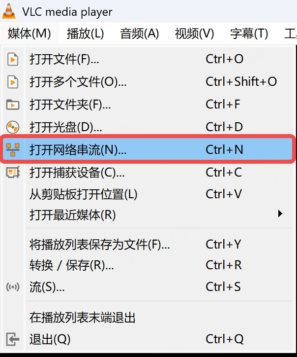
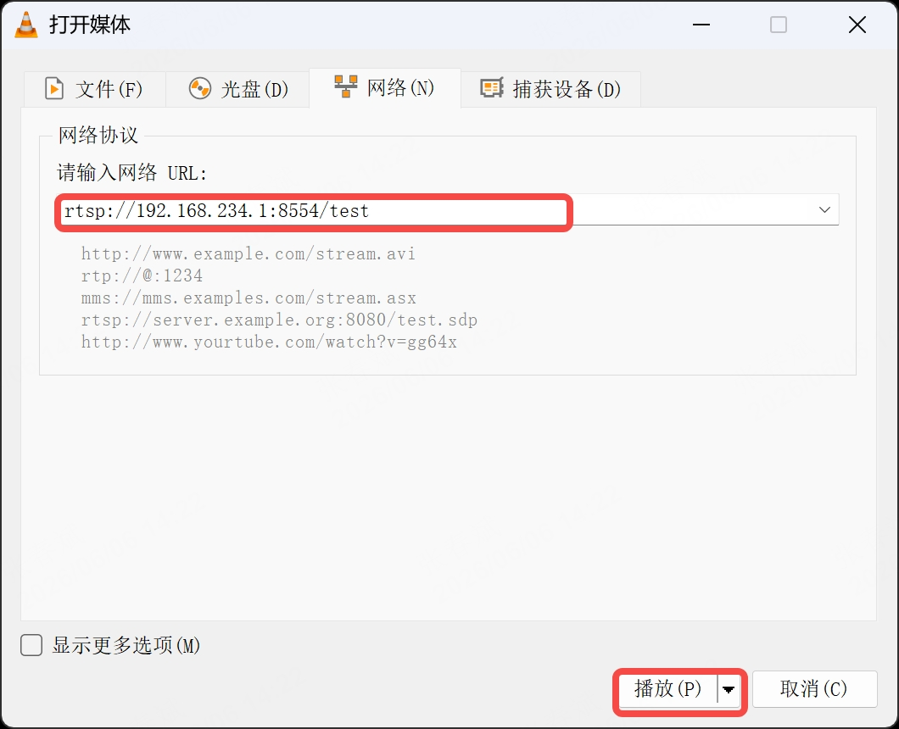
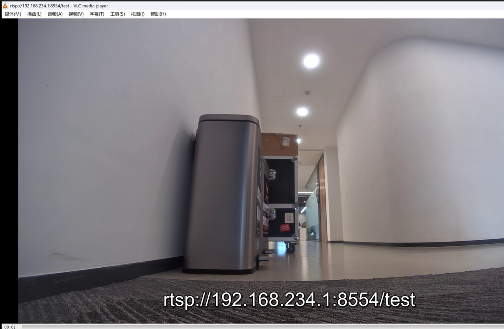
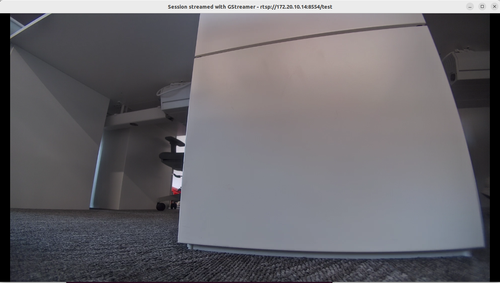

5.1 视频流推送服务
四足机器人广角相机的视频以 Gstreamer 方式推流到以下 URL:
rtsp://192.168.234.1:8554/test #无线连接方式
rtsp://192.168.168.168:8554/test #有线连接方式
默认会在遥控器侧拉流显示实时画面，可通过 VLC 或者 ffplay 进行预览和调用，例如：
5.1.1 VLC查看
在 windows 电脑连接四足机器人 wifi，可通过 VLC 软件进行视频流查看
step1:打开 vlc，点击"媒体-->打开网络串流"

step2:输入设备推流地址：

step3:预览画面

5.1.2 通过ffmpeg获取视频流
在安装了ffmpeg的设备上执行以下命令可直接获取本体相机的视频流
ffplay rtsp://192.168.234.1:8554/test
ffplay -rtsp_transport tcp -fflags nobuffer -flags low_delay -framedrop -strict \
experimental -probesize 32 -analyzeduration 0 -sync ext rtsp://192.168.234.1:8554/test
5.1.3 通过GStreamer获取视频流
安装GStreamer后安装以下插件
sudo apt install -y gstreamer1.0-tools \
gstreamer1.0-plugins-base \
gstreamer1.0-plugins-good \
gstreamer1.0-plugins-bad \
gstreamer1.0-plugins-ugly \
gstreamer1.0-libav
gstreamer1.0-tools：包含 gst-launch-1.0 等核心工具
gstreamer1.0-plugins-base：基础插件（如 autovideosink）
gstreamer1.0-plugins-good：常用插件（如 rtph264depay）
gstreamer1.0-plugins-bad：实验性插件（如 rtspsrc）
gstreamer1.0-plugins-ugly：特殊编码器（如 mpeg）
gstreamer1.0-libav：FFmpeg 相关插件。
插件安装后执行以下命令获取本体相机的视频流
gst-launch-1.0 rtspsrc location=rtsp://192.168.234.1:8554/test latency=0 ! rtph264depay \
! h264parse ! avdec_h264 ! videoconvert ! videoscale ! video/x-raw,width=1280,height=720 ! autovideosink
5.1.4 通过OpenCV获取视频流
安装OpenCV后，执行以下代码获取本体相机的视频流
import cv2
import time
def read_rtsp_Stream(rtsp_url):
# 1. 初始化视频捕获，强制使用TCP
cap = cv2.VideoCapture(rtsp_url + "?tcp") # 尝试TCP传输
# 2. 降低缓冲区大小
if hasattr(cv2, 'CAP_PROP_BUFFERSIZE'):
cap.set(cv2.CAP_PROP_BUFFERSIZE, 1) # 缓冲区只保留1帧
# 3. 禁用硬件加速
if hasattr(cv2, 'CAP_PROP_HW_ACCELERATION'):
cap.set(cv2.CAP_PROP_HW_ACCELERATION, cv2.VIDEO_ACCELERATION_NONE)
if not cap.isOpened():
print(f"无法打开流: {rtsp_url}")
# 若TCP失败，尝试默认协议
cap = cv2.VideoCapture(rtsp_url)
if not cap.isOpened():
print("所有协议均无法打开流，退出")
return
# 4. 循环读取，只取最新帧（跳过旧帧）
while True:
# 连续读取多次，丢弃中间帧，只保留最后一帧（最新帧）
# 这一步可解决缓冲区累积的旧帧问题
for _ in range(3): # 尝试读取3次，确保拿到最新帧
ret, frame = cap.read()
if not ret:
break
if not ret:
print("流中断，尝试重连...")
time.sleep(1)
cap = cv2.VideoCapture(rtsp_url + "?tcp")
if hasattr(cv2, 'CAP_PROP_BUFFERSIZE'):
cap.set(cv2.CAP_PROP_BUFFERSIZE, 1)
continue
# 5. 缩小分辨率（可选，降低显示和传输压力）
frame = cv2.resize(frame, (1280, 720)) # 根据需求调整
# 显示帧
cv2.imshow("RTSP Stream (按q退出)", frame)
# 检测退出
if cv2.waitKey(1) & 0xFF == ord('q'):
break
cap.release()
cv2.destroyAllWindows()
if __name__ == "__main__":
rtsp_url = "rtsp://192.168.234.1:8554/test"
read_rtsp_Stream(rtsp_url)
5.1.5 通过OpenCV使用GStreamer获取视频流
安装OpenCV和GStreamer后，执行以下代码获取本体相机的视频流
import cv2
import time
def read_rtsp_gstreamer(rtsp_url):
# 构建GStreamer管道
pipeline = (
f'rtspsrc location={rtsp_url} latency=0 ! '
'rtph264depay ! avdec_h264 ! '
'videoconvert ! video/x-raw,format=BGR ! '
'appsink sync=false drop=true max-buffers=1'
)
# 创建GStreamer捕获对象
cap = cv2.VideoCapture(pipeline, cv2.CAP_GSTREAMER)
if not cap.isOpened():
print("无法打开GStreamer管道")
return
try:
while True:
ret, frame = cap.read()
if not ret:
print("读取帧失败")
break
# 显示帧
cv2.imshow("GStreamer Low Latency", frame)
if cv2.waitKey(1) & 0xFF == ord('q'):
break
finally:
cap.release()
cv2.destroyAllWindows()
if __name__ == "__main__":
rtsp_url = "rtsp://192.168.234.1:8554/test"
read_rtsp_gstreamer(rtsp_url)
5.1.6 优化视频流延迟
直接获取视频流进行展示，可能存在画面延迟问题，这种情况需要优化视频流获取参数，如调整缓冲区大小、禁用硬件加速等。
在设备屏幕遥控器上获取同样的视频流，展示的视频流效果已经做到较低的延迟。
使用上方的GStreamer获取视频流，也有较低的延迟，这并非是机器端推送的视频流存在延迟。
也可以选择如大牛直播SDK等针对性做过优化的程序进行播放。
5.1.7 连接外部wifi
连接外部局域网wifi，获取到本地IP之后，使用合适的IP进行视频流获取：
ffplay rtsp://172.20.10.14:8554/test
